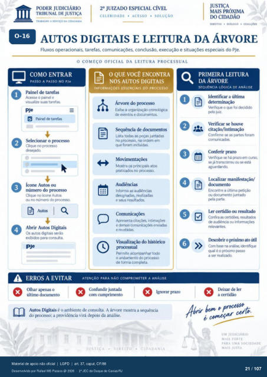

Transcrição automática em português, ainda não revisada. Confira grafia, prazos e termos jurídicos na imagem e no PDF antes de utilizar.
TRABALHO A SERVIÇO DA
CELERIDADE • ACESSO • SOLUÇÀO
DIREITOS • DIÁLOGO •
AUTos DIGITAIS E LEITURA DA ÁRVORE
Fluxos operacionais, tarefas, comunicações. conclusão, execução e situações especiais do PJe.
O COMEÇO OFICIAL DA LEITURA PROCESSUAL
COMO ENTRAR
PASSO A PASSO NO me Painel de tarefas
Acesse 0 painel e visualize suas tarefas.
Painel de tarefas Selecionar o prcxesso
Clique no desejado.
Ícone Autos ou número do processo
Clique no ícone Autos Ou no número do
Abrir Autos Digitais digitais serão
para consulta. A ERRosA EVITAR
OQUE VOCÊ ENCONTRA
EJ NOS AUTOS DIGITAIS
INFORMAÇÓES ESSENCIAIS DO PROCESSO
Árvore do prcxeso a crorwlógica
de e dcxumentcw Sequência de
Lista tcxias as peças juntadas no pm:esso, na ordem em
que foram incluídas. Mostra os principais atos
praticados no prczesso. Audiências
Informa as audiências realizadas
Comunicaçüs Apresenta
e demais envixias e recebidas
Visualização do históri€X) prcxessual
Permite acompanhar tcxio 0 andamento do prcx:esso
de forma completa.
ATENÇÃO PARA NÃO COMPROMETER A ANÁLISE
Autos Digitais é o ambiente de consulta. A árvore mostra a sequência do prcxesso•, a providência virá dmis da análise.
PRIMEIRA LEITURA
DA ÁRVORE
SEQUÊNCIA LÓGICA DE ANÁLISE
Identificar a última determinação
Verifique o que fci decidido jutz.
Verificar houve citação/ intimação
Confirme as partes foram Conferir prazo
Verifique se há em curso. se Já transcorreu se está
I,cwalizar manifestação/ Encontre a última
ou dcxumento parte.
certidão ou Cmfira as
de audiência Ou relevantes
o próximo ato na
qual é o próxrno passo Abrir benv preceff>.
é cepteça.r
UM JUDICIÁRIO
MAIS FORTE
YARA UMA SOCIEDADE
MAIS JUSTA
Ver também o infográfico original (página 21)
